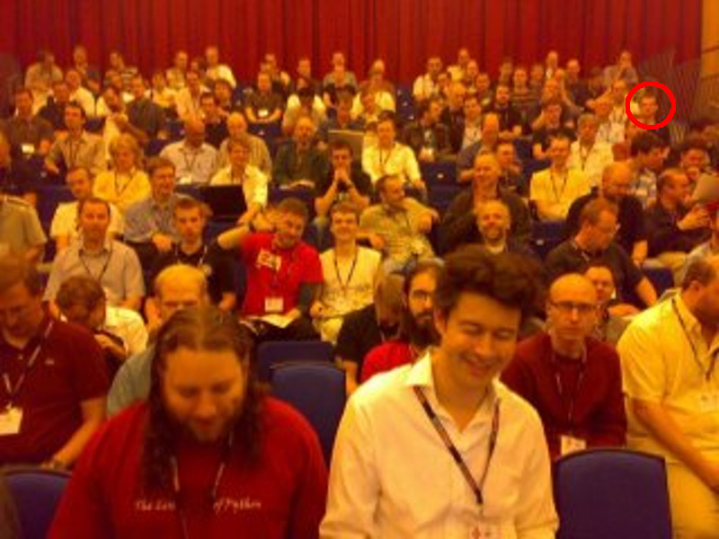
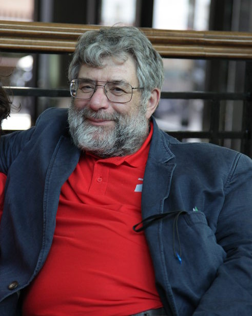

Saying Thank You
This year PyCon UK will give the inaugural John Pinner awards for community service. For those of you who don't know, here's some context about John, the awards and some encouragement for you to nominate potential recipients.
I attended the very first PyCon UK back in 2007 - I've circled myself in the photo below (taken by my buddy Jonathan Hartley).

I was a C# developer in a large investment bank in London investigating IronPython (the version of Python on Microsoft's .NET platform). While I was an experienced programmer, I knew nothing of Python nor did I know anyone in the Python community. Being of a shy disposition (yes, honestly!) it was with some trepidation that I turned up to the Birmingham Conservatoire with around 200 other people on the first day. We were ushered into the hall and a bearded gentleman introduced himself as "John Pinner, chair of the organising committee".
"I am a Pythonista!", is how he proudly opened the conference.
He explained how Python was a language created by a community of volunteers, that many such volunteers lived in the UK, how some of these volunteers decided there should be a conference for this community, and here we all are, so say "hello" to each other, feel welcome and have fun.
It was clear that this was not like any programming conference I'd ever attended!
The first day contained a free workshop for beginner Python programmers. This sounded right up my street and so I turned up with about 10 other people. Into the room strolled John wearing a Cheshire cat grin. He was carrying a large cardboard box containing ring-binders full of paper. Everyone was given a binder to keep and therein was a step-by-step course for learning Python, written by, none other than, John.
"We'll start at the beginning", he said, "...ask questions and let's see how far we get."
Before letting us loose he gave us all one bit of advice about Python that
still holds true today and which I use myself with any Python beginners: use
the REPL with the help and dir functions to explore
the language, so don't be afraid to poke around.
Over the course of the next two days it became clear that John was a Pythonic force-of-nature who took part in the conference by training beginners (like me), chairing sessions, giving a talk, solving problems at the help desk and even making cups of tea in the breaks. This was in addition to the onerous task of founding and organising the conference. Most significantly all this work was voluntary. He inspired a group of people to create a space for our community to come together. As John was to say at the opening of PyCon UK 2013 (channelling Abraham Lincoln), our conference was "of the community, by the community and for the community".
John taught Python programming and its community focused values to me and many other people in the UK. This kind and gentle man understood the value of such an outlook and, through his own voluntary work as the founder and chair of PyCon UK, promoted it with great zeal.
John tragically lost his fight with cancer in 2015. He is a sorely missed mentor, leader and friend.

This year is the 10th anniversary of that first PyCon UK and it seems appropriate that we should celebrate such a milestone by recognising those in our community who volunteer their time and effort to make it the welcoming, diverse and interesting place that it is (just as John did). That these awards are named after John is a wonderful way to sustain the memory of this remarkable man and his ethos of volunteering for the benefit of others.
Why do we need such community awards?
For those of you who have never organised a meetup, user group, dojo or conference, I want you to understand that it takes a huge amount of time and effort to make such things happen. Furthermore, there are many people in our community who give freely of their time for others through mentorship, teaching or simply answering the many questions that turn up on mailing lists, community forums and online chat channels. There are also many people who write documentation, create resources and author blog-based tutorials for our community. It means Python is a wonderfully accessible language that empowers people to grow, explore and take control of their digital world. I hope you agree with me when I say that this is "a good thing™".
However, there is a cost.
Unfortunately, over the years I have seen many of my friends burn out after volunteering for our community. Bringing people together is often a thankless task involving a financial burden too; for example, who pays for the deposit on the room hire? Furthermore, some in our community treat those who volunteer with an air of entitlement that assumes such volunteers owe them service, some sort of on-call technical support or demand that they should change their voluntary efforts to address such-and-such a point of view. This is a toxic attitude that destroys our community - it makes it a demanding and unfriendly place to be. It's demoralising and mentally draining for those on the receiving end and shows a complete lack of respect for others from the perpetrators of such a selfish attitude.
It is obvious that PyCon UK want to foster more of the former positive context and challenge those whose behaviour causes the latter hurtful environment.
The contrast to the negativity outlined above is where we, as a community, acknowledge, celebrate and thank people for their contributions. If you attend a user group, ask questions on a mailing list or follow various blogs because they post interesting content (and, let's be honest here, that's pretty much everyone in our community), why not say "thank you" to someone whose volunteering helped you in some way? It takes hardly any time or effort on your part but it makes those who contribute feel positive, proud and happy to be told that their efforts are appreciated. People who feel appreciated gain the momentum to continue to contribute and, in the context of a community of volunteers, this is the antidote to burn out.
Some of us in the community are lucky to benefit already from our voluntary work: we're invited to speak at conferences, get interviewed in community podcasts and are the recipients of wider community recognition. The John Pinner awards are not for such "high profile" members of our community. Why? Because there are many in our community who don't get the recognition or thanks that they deserve. By instigating the John Pinner awards PyCon UK is giving you, a member of the UK's Python community, an opportunity to recognise and thank those oft-overlooked volunteers who make the UK's Python community such a wonderful place to be.
If you can think of someone who deserves such recognition (and I certainly hope you do), then please visit the PyCon UK website and fill in the very simple form. It takes but a minute or two. You can nominate as many people as you can think of, and PyCon UK will make a fuss of the most nominated members of our community with public recognition, a free ticket to next year's PyCon UK and a rather swanky medal.
So, what are you waiting for? Don't just sit there, nominate someone! It is just a little bit of effort put into recognising a friend, colleague or collaborator who has helped our wonderful community in some way.
Thank you.